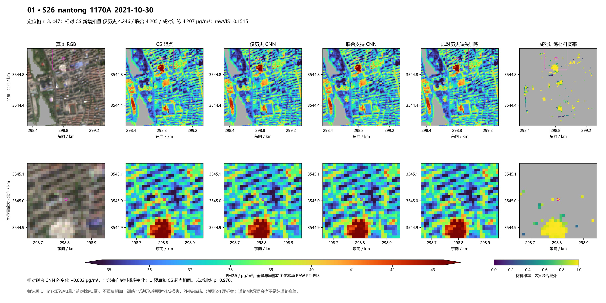
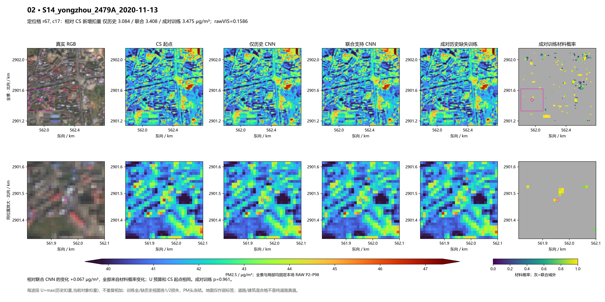
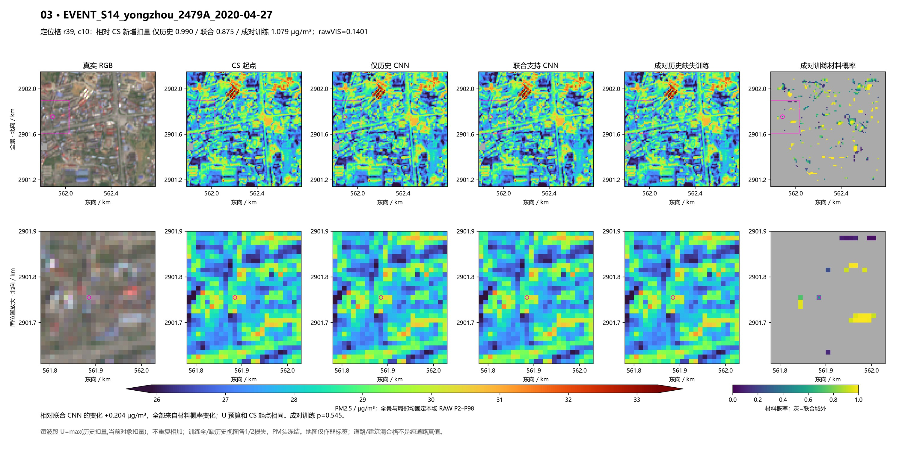
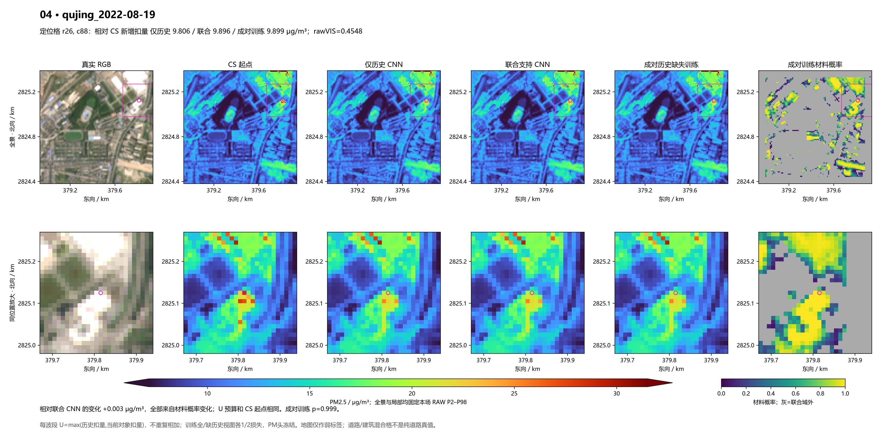
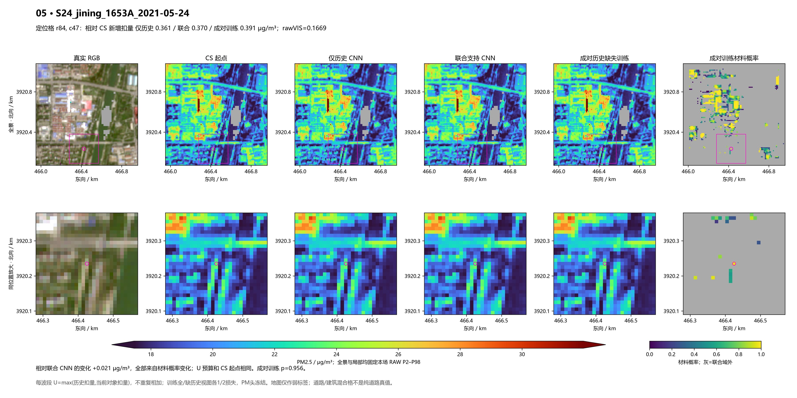
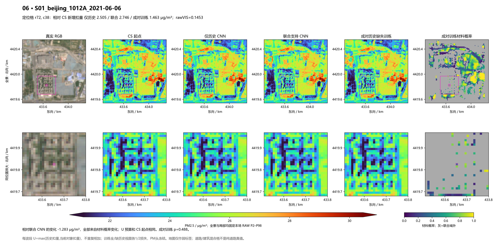
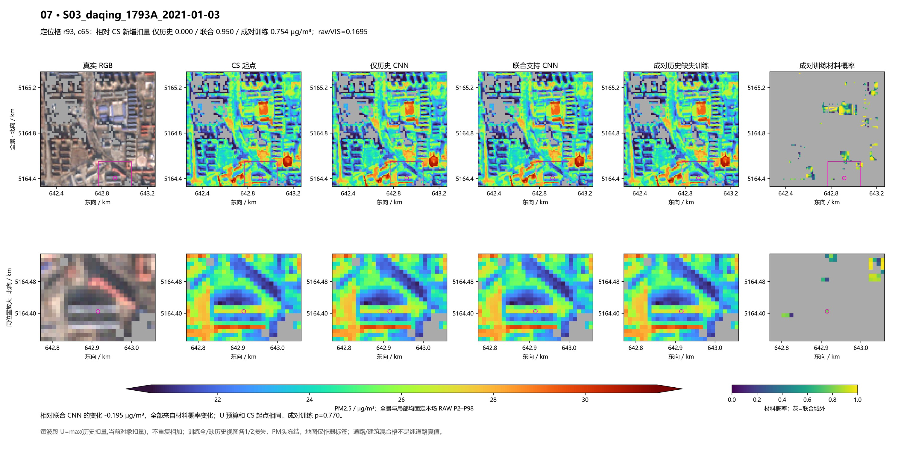
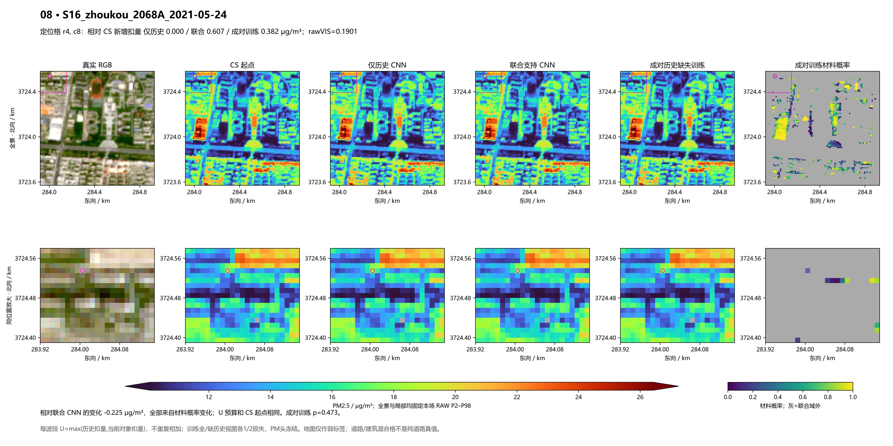

同一联合支持预算、同一CNN和训练坐标，每个真实小窗用“历史可用/历史整组缺失”两种视图等权训练，更新次数不增加。部署仍使用真实输入。借鉴ModDrop的成组缺失思路，本支不声称完整复现。
真实缺历史建筑仅由1/8识别到2/8，新增域整体分类更差。原30对象平均缓解增加，但道路代价也增加；保留联合支持CNN作为较稳妥对照，不将本支称为总冠军。
| 同支持指标 | 联合CNN | 成对训练 |
|---|---|---|
| 原30对象相对CS均降 | 0.329168 | 0.367144 |
| 锁定道路最坏对比变化 | -0.039975 | -0.051271 |
| 地图混合格最大下降 | 4.205468 | 4.207369 |
| 生产环境最大核心下降 | 0.017569 | 0.022635 |
| 站窗RMSE | 19.642617 | 19.642901 |
结果与限制 · 固定合同 · 同支持评价 · 真实缺历史子组 · 同H材料代价 · 图中实际值 · 原12季节点
前六图沿用此前固定位置，后两图沿用上一批新增范围的事后示例；没有为本次重新挑好场。全景与局部都固定原RAW P2–P98、同原支持。
沿用此前固定六点；不因本次效果更换
定位格相对CS下降：仅历史 4.246、联合 4.205、成对训练 4.207 μg/m³。相对联合变化 +0.002，全部来自新材料概率，预算未扩大。

沿用此前固定六点；不因本次效果更换
定位格相对CS下降：仅历史 3.084、联合 3.408、成对训练 3.475 μg/m³。相对联合变化 +0.067，全部来自新材料概率，预算未扩大。

沿用此前固定六点；不因本次效果更换
定位格相对CS下降：仅历史 0.990、联合 0.875、成对训练 1.079 μg/m³。相对联合变化 +0.204，全部来自新材料概率，预算未扩大。

沿用此前固定六点；不因本次效果更换
定位格相对CS下降：仅历史 9.806、联合 9.896、成对训练 9.899 μg/m³。相对联合变化 +0.003，全部来自新材料概率，预算未扩大。

沿用此前固定六点；不因本次效果更换
定位格相对CS下降：仅历史 0.361、联合 0.370、成对训练 0.391 μg/m³。相对联合变化 +0.021，全部来自新材料概率，预算未扩大。

沿用此前固定六点；不因本次效果更换
定位格相对CS下降：仅历史 2.505、联合 2.746、成对训练 1.463 μg/m³。相对联合变化 -1.283，全部来自新材料概率，预算未扩大。

事后展示：原锁定30对象中，新增可触达对象的平均预算贡献最大；不作为验证样本
定位格相对CS下降：仅历史 0.000、联合 0.950、成对训练 0.754 μg/m³。相对联合变化 -0.195，全部来自新材料概率，预算未扩大。

事后不利展示：全部206场 current-only 地图道路交格新增降幅最大；地图交格可能与建筑混合
定位格相对CS下降：仅历史 0.000、联合 0.607、成对训练 0.382 μg/m³。相对联合变化 -0.225，全部来自新材料概率，预算未扩大。
